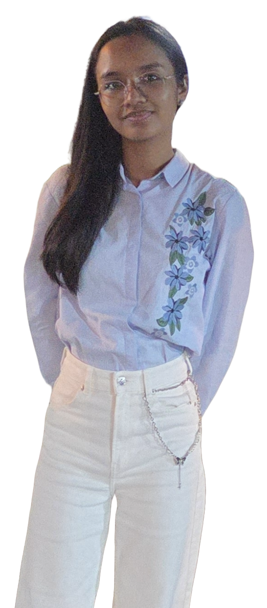
Alesha Noor binti Mohammad Salim
Entry-Level Programmer
Address
Petaling Jaya, Selangor
Phone
018-789 3381
aleshanoorsalim@gmail.com
Github
github.com/4l3sh4
linkedin.com/in/alesha-noor-6bb56a311
Internship Duration
27 Jul 2026 — 18 Oct 2025
I'm an aspiring programmer who has had a long history of coding even during my high school years. I consider myself as a very dedicated worker, and willing to help others if they are in need of any assistance. Although I consider myself as more of a follower in a workplace setting, I am no stranger to taking up a leadership role whenever a situation requires it.
In my free time, I like to explore different programming languages and work on personal projects. I'm always eager to expand my knowledge and skills in the world of technology.
Clubs & Events
Competitions
Volunteer & Participation
Projects
Skills
Clubs & Events
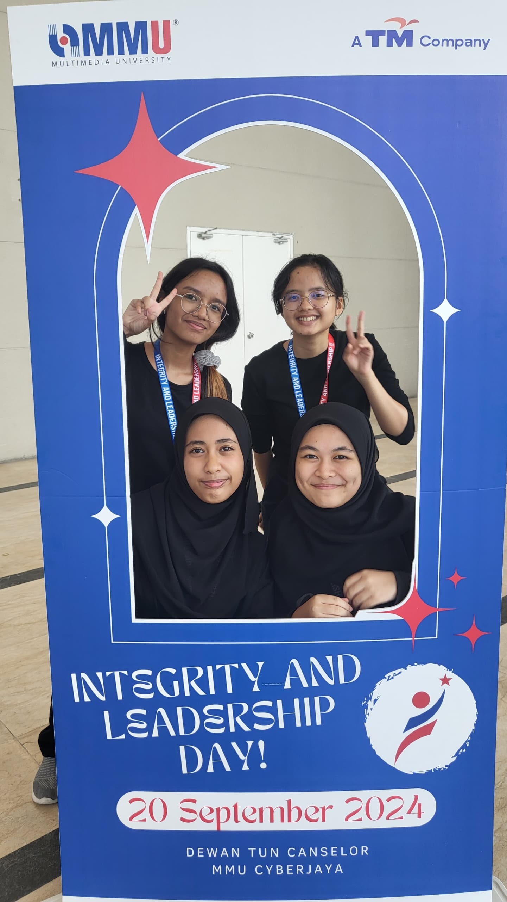
Integrity & Leadership 2024
➥ Head of Media Division • Aug 2024 — Sep 2024
For one of Multimedia University's events, I served as the head of media division for Integrity & Leadership 2024. Admittedly, it felt quite overwhelming at the time, as I was unexperienced with undertaking such a huge leadership role. Thankfully, with the help of my peers, following my advisor's words, and the support of my talented team who was willing to take upon the tasks that I gave them, we managed to produce high-quality and informative digital content for our social media profiles, and made this event a success.
Overall, taking upon this position made me a better manager, organizer, and planner— skills that I wouldn't have been able to improve upon if I hadn't volunteered to do so.

Students' College Committee
➥ Floor Leader • Jan 2025 — Dec 2025
I served as a Floor Leader for Students' College Committee, a student body in Multimedia University that essentially acts as the bridge between the hostel management and its residents.
Throughout my time in this position, I have participated in many events that have definitely built contributed to the person that I am today. I have learnt a lot about what it takes to be a team player, how to improvise whenever sudden crises would occur, and managing my time with juggling co-curricular activities, studies, as well as my personal projects.
Not only that, I'd participate in the hostel registration days that would be conducted whenever a new intake of students would continue their studies at Multimedia University. I feel as if my people skills have definitely improved, as I would often have to face a lot of not only students, but the parents themselves as well, and assist them in any enquires or troubles they would have.
Overall, joining this particular student body gave me a lot of experiences that I would certainly encounter if I were to face a working environment, and I do not regret it one bit!
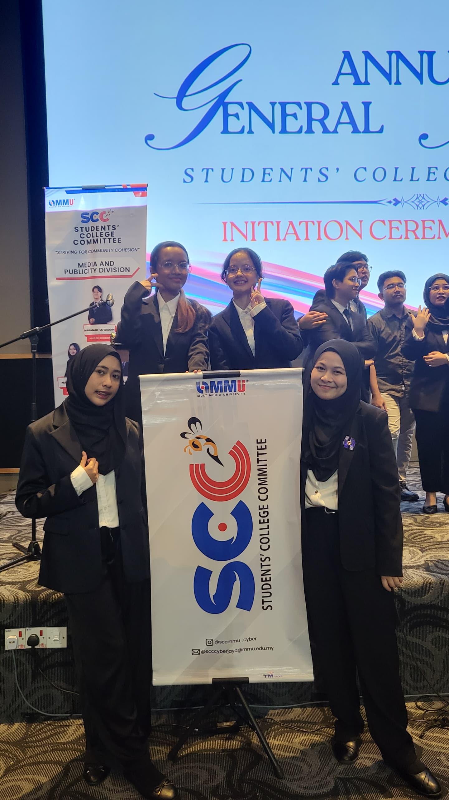
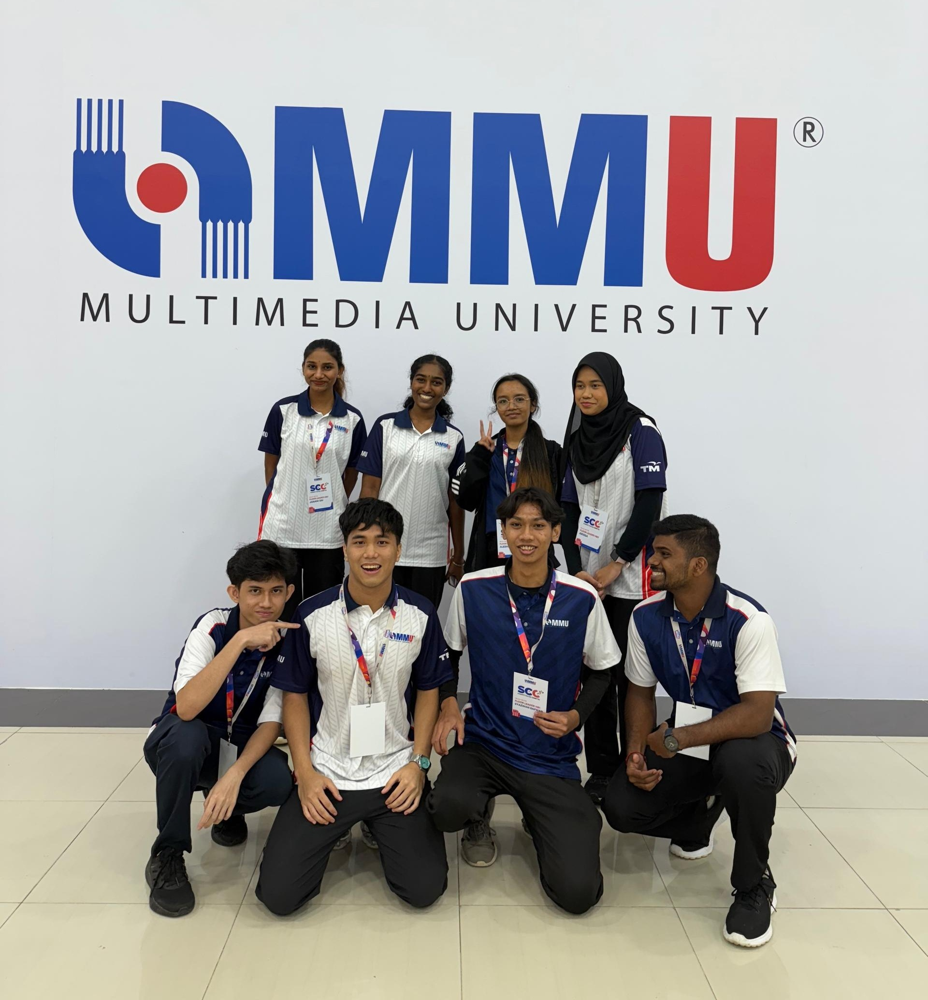
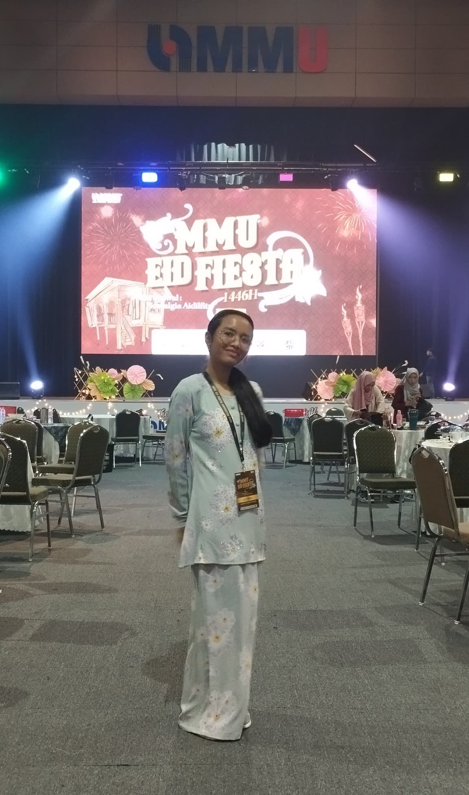
MMU Eid Fiesta
➥ Assistant Head of Logistics • Apr 2025
I served as the Assistant Head of Logistics for MMU Eid Fiesta, a major cultural event organized by the Students' College Committee, in collaboration with six other clubs in Multimedia University. It was a challenging experience, but it allowed me to develop my organizational and leadership skills significantly.
To assist my head of division, I helped tracked those who have or haven't attended meetings, created documents to book items that are needed for this 2000-person event, and took up the responsibility to lead the team whenever the head was unavailable at the time.
One of the major challenges I experienced was when my head was unable to be contacted during the morning of the event itself, and the chairs and tables haven't been set up yet. Not wanting to waste time, I tried to lead the team with the best of my abilities on how the tables should be arranged, and help them set up the chairs. Thankfully, midway through, my head finally arrived during our set-up. Although our presumed time to finish setting up was a little delayed, we still managed to set up everything, thankfully, in time.
This experience made me realise how backup plans are important, and how important it is to step up for the sake of other people whenever things are dire. I also am grateful for having such an understanding team during this event, as they were not only hardworking, but also are willing to help even the other divisions that are low in manpower, such as the special task team at the time.
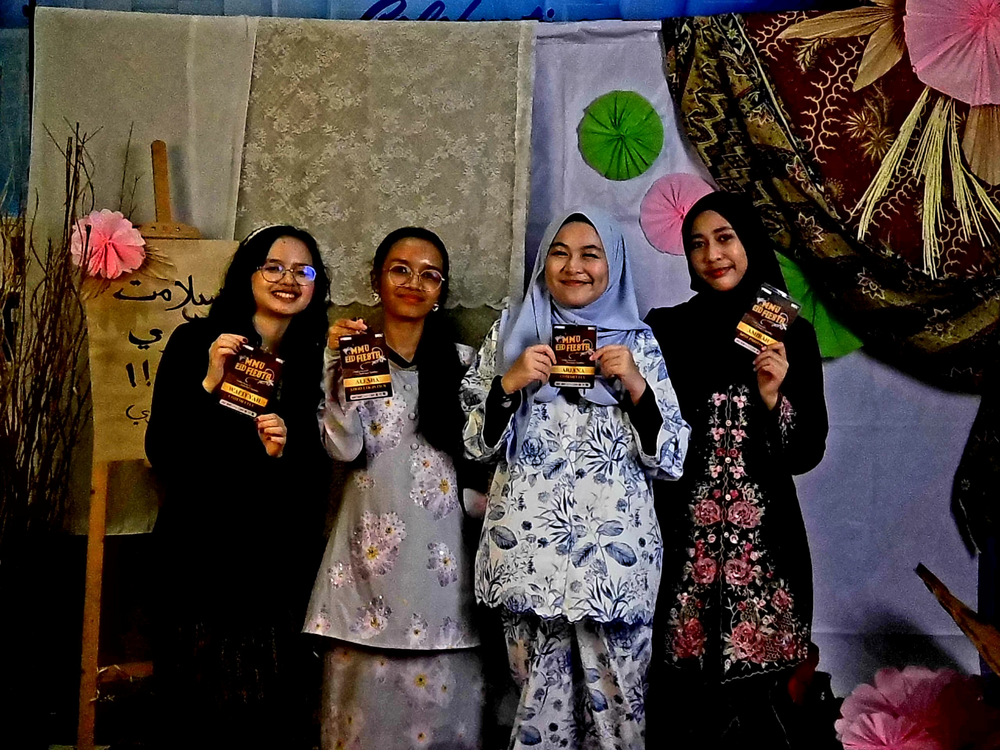
MindMatters
➥ Programme • Jun 2025
I participated as a regular programme committee in MindMatters, an event organized by the Students' College Committee to promote the destigmatization regarding conversations about mental health.
My division and the special task division helped each other out in setting the decorations and booths meant for the event, which was quite the stressful task since we only had about a day to set up the whole event before the next morning. Although it was mentally-taxing for me at the time, a small part of me who didn't like seeing other people being burdened with lots of work motivated me to assist them with any tasks that needed to be done, whether big or small.
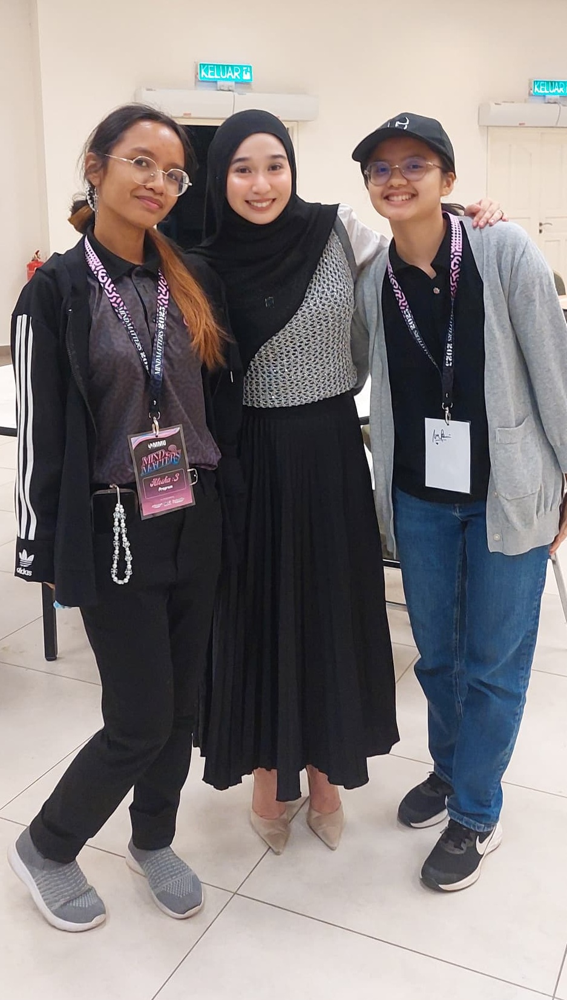
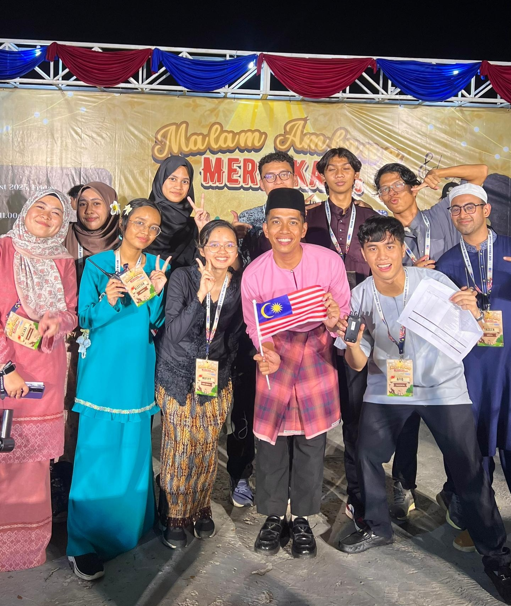
Malam Ambang Merdeka 2025
Special Task • Aug 2025
I participated as a special task committee in Malam Ambang Merdeka 2025, an event organized by the Students' College Committee to commemorate Malaysia's 68th year of independence. We had to plan out the arrangements for the venue's decoration, and worked together to set up everything before the event started. Although we went through a lot of challenges, such as the venue set-up having to be delayed due to heavy rain on the day that it was supposed to happen, I still had an enjoyable time being able to celebrate such a momentous occasion with the other committees— and the catering was very delicious!
Students' College Committee
➥ Media & Publicity • Apr 2026 — Present
I'm currently serving in the Students' College Committee's Media & Publicity division, where I use my graphic design skills to produce digital posters for their Instagram feed. Additionally, I also assist in designing banners, shirts and lanyards for any events that we would be involved in.
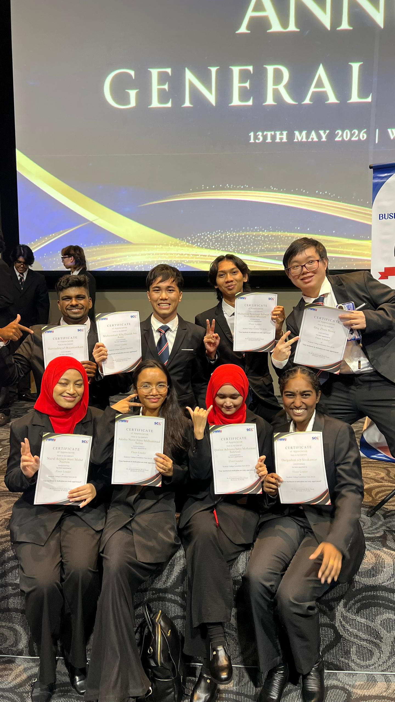

Other Positions that I Hold
Japanese Cultural Society
Promotion and External Relations • Nov 2023 — Present
I'm currently serving in the Japanese Cultural Society's Promotion & External Relations division, where I assist in handling the club's Instagram and Whatsapp groups, promote events through online means, as well as communicate with external partners whenever they are interested in collaborating with our club, and vice versa.
The ComiNation
Promotion and External Relations • Nov 2023 — Present
I'm currently serving as the Comination's treasurer. I assist in handling the club's money, ensuring that it is kept safely by using a separate e-money account. Additionally, I also help distribute the money made from boothing events at conventions to artists who have given their merchandise for our club to sell.
Cyberjaya Accounting Club
Media • Nov 2025 — Nov 2025
I served in Cyberjaya Accounting Club's media team, producing digital posters to be shared on their Instagram feed.
Competitions
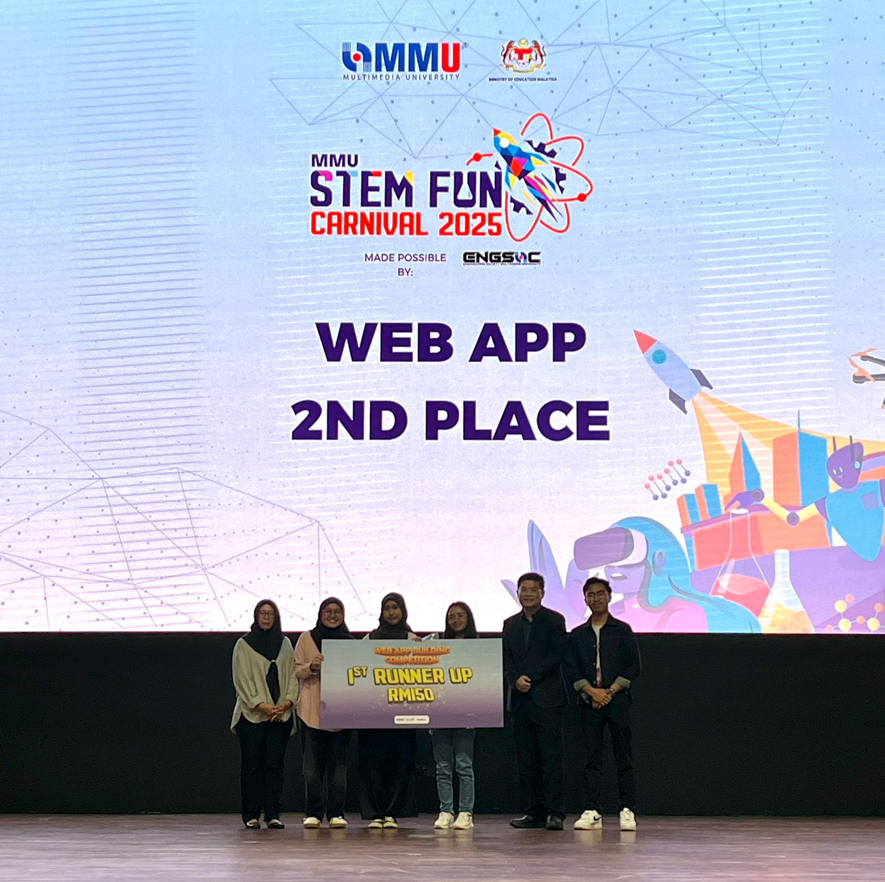
Web App Building
STEM Fun Carnival •2nd Place
Two other participants and I have decided to join a competition in which we had to create a university STEM mentorship & collaboration portal, made for Multimedia University's STEM Fun Carnival in 2025. With just a week to complete it, we managed to plan out, develop, and finished the project just in time. To our surprise, not only did we get shortlisted as the top 5, but after presenting our project to the three judges during the event day itself, we managed to secure second place.
It was a wonderful experience, having our efforts be recognized and awarded— even if I was worrying endlessly about one of my exams that was happening on the same day that the event was held. I wouldn't mind joining such a competition again!
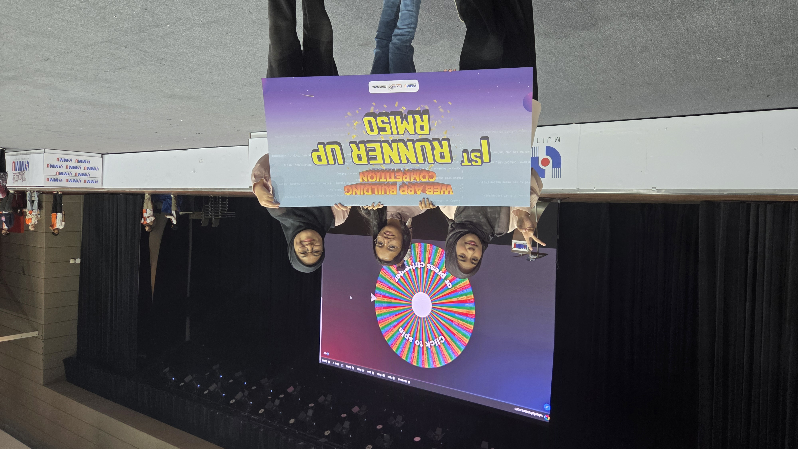
Volunteer & Participation
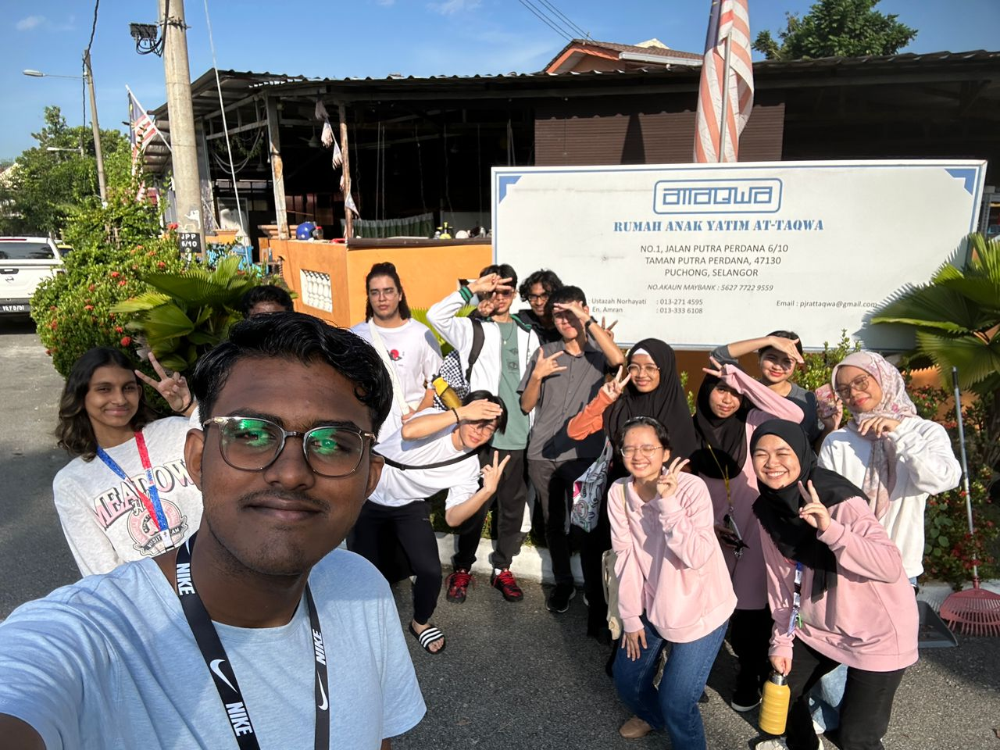
Rumah Anak Yatim At-Taqwa
1 Feb 2024
During the second semester of my foundation year, my group and I visited Rumah Anak Yatim At-Taqwa, an orphanage located in Puchong, due to it being required for my Introduction to Business subject. We donated rice and giftbags to the children, as well as played games with them. It was a heartwarming experience, and seeing the joy on the children's faces made all the effort worthwhile.

Taman Kucing Cyberjaya
13 Dec 2024
For our Sustainable Society subject, my group and I volunteered to assist the workers at Taman Kucing Cyberjaya. We helped with cleaning the cages, feeding the cats, and giving them some love and attention. Additionally, we also donated cat food and toys that we managed to buy from our fundraising efforts. It was a heartwarming experience, and it made me realize how important it is to give back to the community and help those in need— whether they be humans or animals.
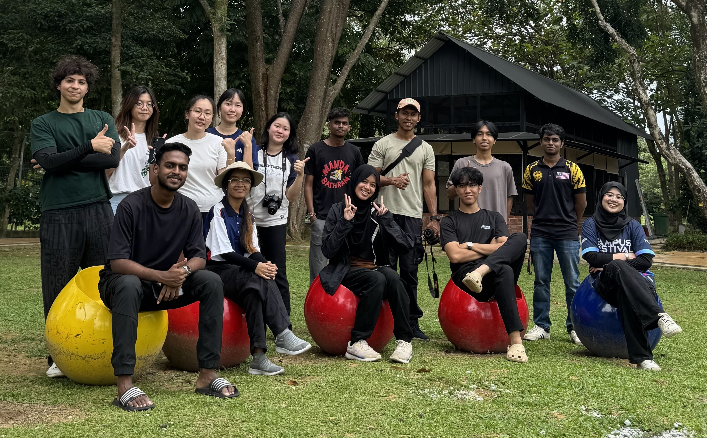
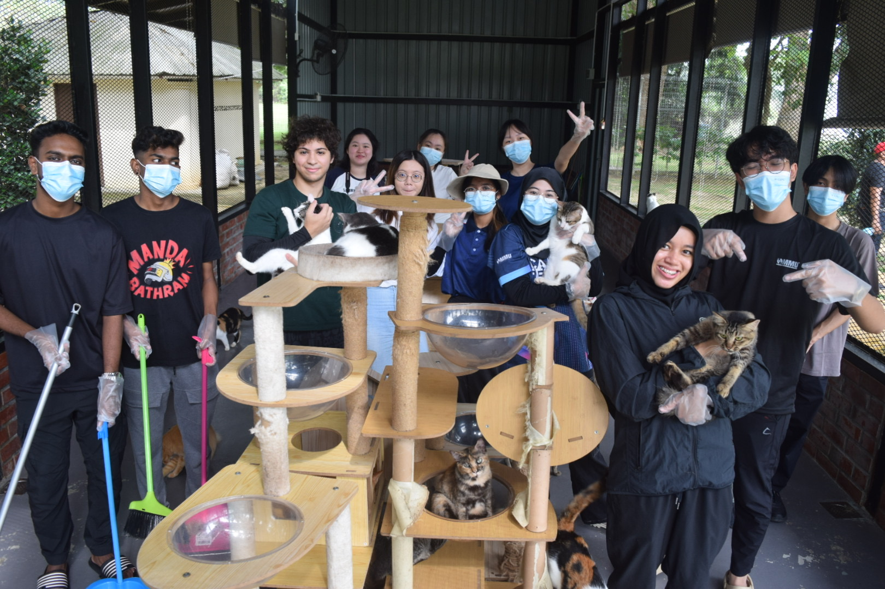
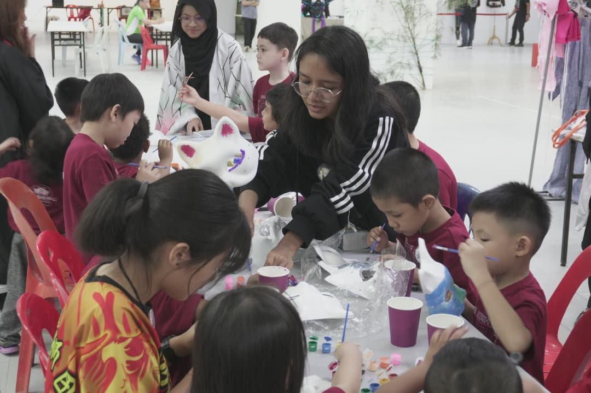
Yoakezuki 2025
20 — 21 September 2025
As one of the many high-committees of Japanese Cultural Society, we've decided to assist in the organization of Yoakezuki 2025, a small-scale anime convention held in Spectrum Shopping Mall, Ampang. I helped with setting up the venue, managing our own club's booth, and helped the chilren with painting their fox masks. It was a fun experience, and it made me realize how much effort goes into organizing a convention, even if it's a small one. Additionally, it was also a great opportunity for me to meet new people and make new friends who share the same interests as me.
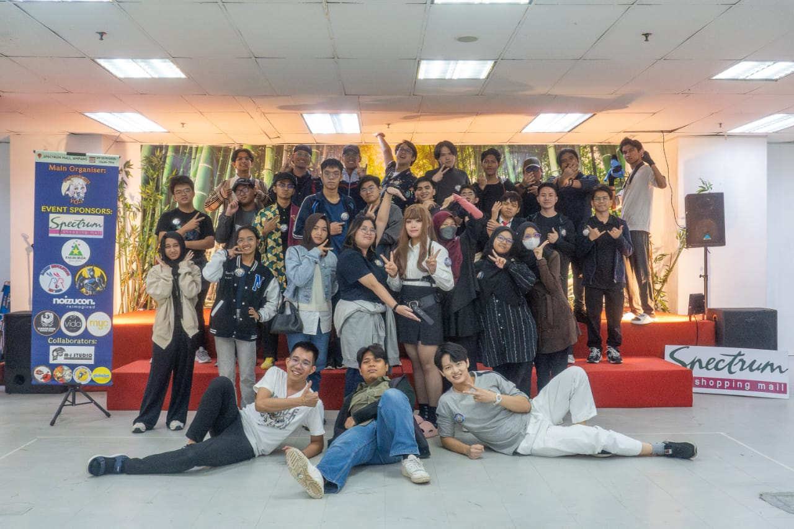
Perdana Discourse Series 25
5 Nov 2025
As a representative of the Students' College Committee, I decided to be an attendant of the Perdana Discourse Series 25 (PDS 25), a series of talks organized by the Perdana Leadership Foundation. The theme for PDS 25 was "The Future of Leadership in a Post-Pandemic World", and it featured several prominent speakers from various fields. It was an enlightening experience, and it made me realize how important it is to be adaptable and resilient in the face of challenges, especially in a post-pandemic world.

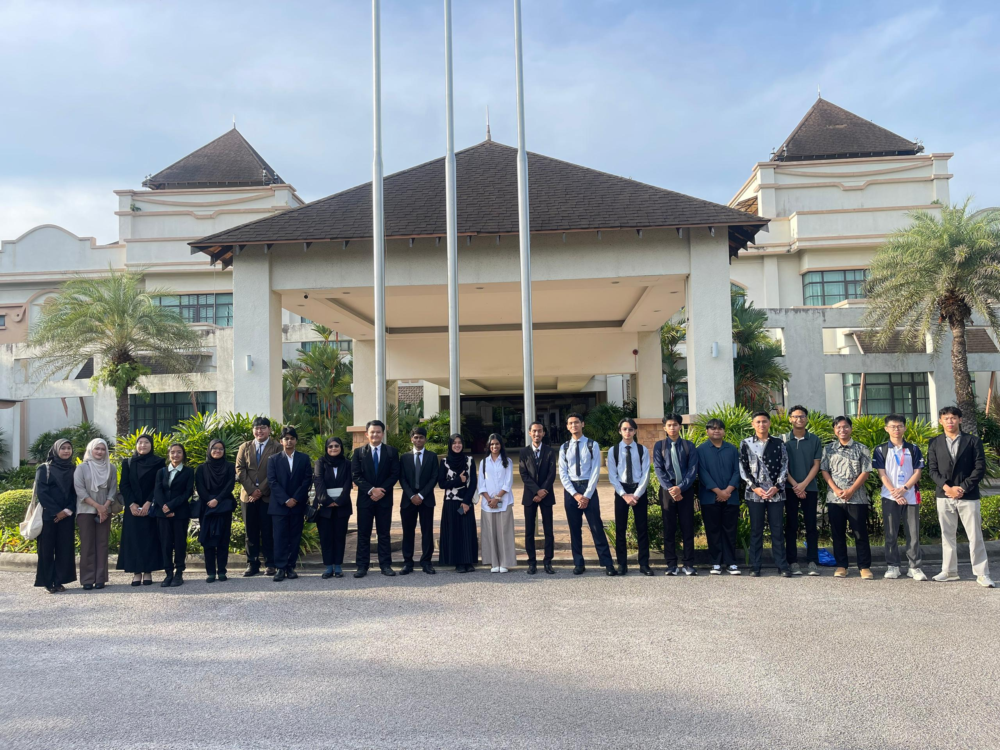
Highlighted Projects
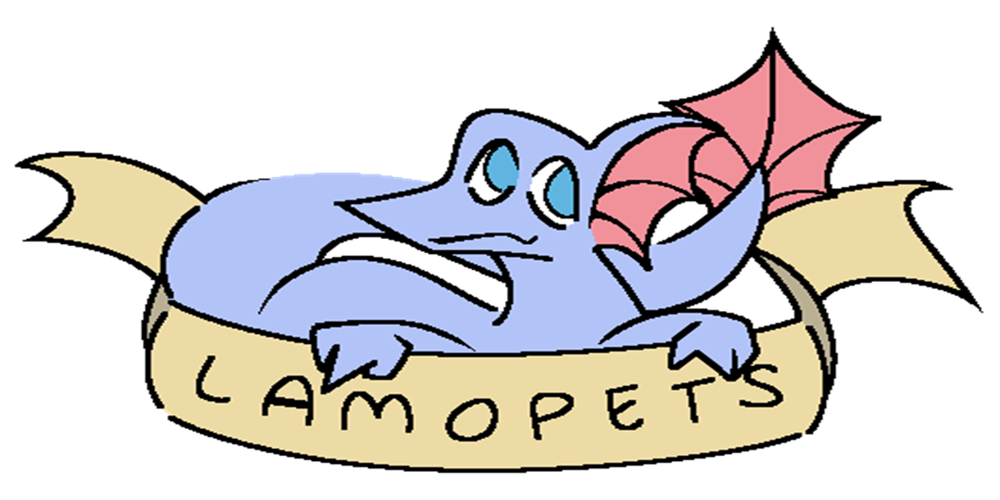
Flask, HTML, CSS, JavaScript • Dec 2024
A virtual pet browser game in which the user can buy and collect various fantastical pets, play minigames to earn virtual currency, dress their avatar, and communicate with other users using an online forum.
This group project was made during the final semester of my Foundation in Computing in 2024. It was heavily inspired by the virtual pet browser games that I'd use to play when I was younger, like Neopets, Sylestia, and Flight Rising. My main contribution was providing the graphical assets, as well as coding the JavaScript minigames. I was surprised by how developed this project was in under 14 weeks.
Overall, it gave me an exciting experience on being a web developer, and this project wouldn't have been made possible without having a supporting group.
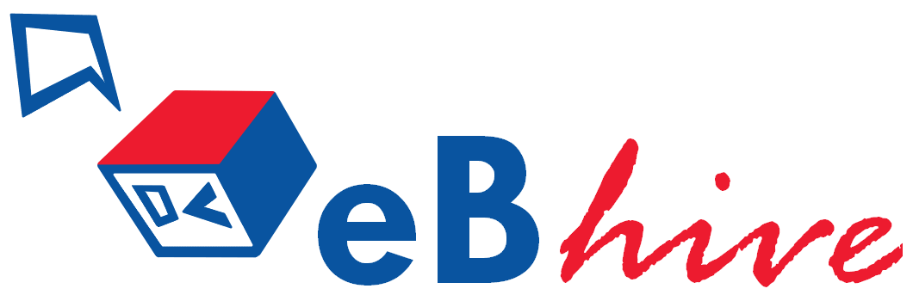
Flask, HTML, CSS • Dec 2025
A web application in which our group tried to create a university STEM mentorship & collaboration portal, made for Multimedia University's STEM Fun Carnival in 2025. With just a week to complete it, we managed to plan out, develop, and finished the project just in time.
My main contribution to this project was mainly being the front-end developer, creating the graphical assets, ensuring the website's design and layout is aesthetically appealing, maintaining the color scheme of the website, and fixing any visual abnormalities. Additionally, towards the end of our development and submission date, I became the quality assurance checker— making sure that every feature of the website was of the upmost quality, and that the end-user experience was comfortable.
Other Projects
Parking Lot Management System
Java • Feb 2026
A group project made for an Object-Oriented Analysis and Design assignment. It's a system that handles vehicle parking, spot allocation, payment processing, and fine management. It was a fun project to work on, and I got to learn a lot about how to design a system using UML diagrams, as well as how to implement it using Java.
Seminar Management System
Java • Feb 2026
A Java Swing-based seminar management system, made for an Object-Oriented Analysis and Design group project. It allows users to register for seminars, view seminar details, and manage their registrations. This simple project was a great opportunity for me to learn about the basics of Java, and get my bearings on GUI development.
Researchly
Flask, HTML, CSS • Feb 2026
Researchly is a web application that acts as a research grant system— allowing researchers to submit their research proposals, and for the administrators to review and manage these proposals. Although I do not feel that impressed with it, considering the fact that the website itself is quite rushed and unfinished at some parts, I still learnt a lot when making this project— especially in regards to web design!
Yahtzee Multiplayer on Single-Machine
C • Feb 2026
This project is a local multiplayer Yahtzee game where multiple players run separate client processes on the same machine. All communication is handled through POSIX named pipes (FIFOs) and shared memory. The server coordinates all turns, scoring, and overall game flow.
My main role in this project was to code the initial logic of the game, which I successfully did without the help of artificial intelligence!
Robowars
C++ • Jun 2025
This group project made in C++ was my first introduction to object-oriented programming. It's an automized game where the size of the grid, the number of robots, and their types are determined by an input file that will be read by the program itself.
The Funny Yet Concerning Adventures of Kippi the Cat
Python • Feb 2024
A Python-only text-based adventure game that I made for a Problem Solving and Program Design assignment during the second semester of my foundation year. It is heavily inspired by the classic Japanese role-playing games made in the 90s, such as Dragon Quest, Final Fantasy and Pokémon.
This project utilizes a lot of lists and dictionaries for its inventory management system, functions that are used for player and enemy attacks, if-else statements for the item drops and character dialogue choices, as well as a save file function so that the player can continue their journey if they were to ever take a break from playing the game. It consists of 6,508 lines of code, 4 areas that the player can traverse throughout their journey, 21 enemies, 4 mini-bosses, and one final boss fight. Each enemy has their own unique attacks, and stat distribution.
Not only that, this Python game also contains 25 different armour that improve the user's stats, 22 consumables that give various effects— good and bad— to the player, and 25 weapons, which totals up to 72 different items that the player can collect within a play-through. The game's ending also changes based on the dialogue choices that the player has made when playing the game, giving it a little bit of replayability.
Looking back, this was quite the daunting project, but I had lots of fun with it! I'd definitely try to re-create a project like this whenever I have the free time to do so.
Skills
Programming Languages
from most to least proficient
- HTML
- CSS
- JavaScript
- Python (Flask)
- Java
- C++
- C
Frameworks and Tools
from most to least proficient
- Github
- Git
- Visual Studio Code
- Code::Blocks
- BlueJ
Languages
- English
- Malay